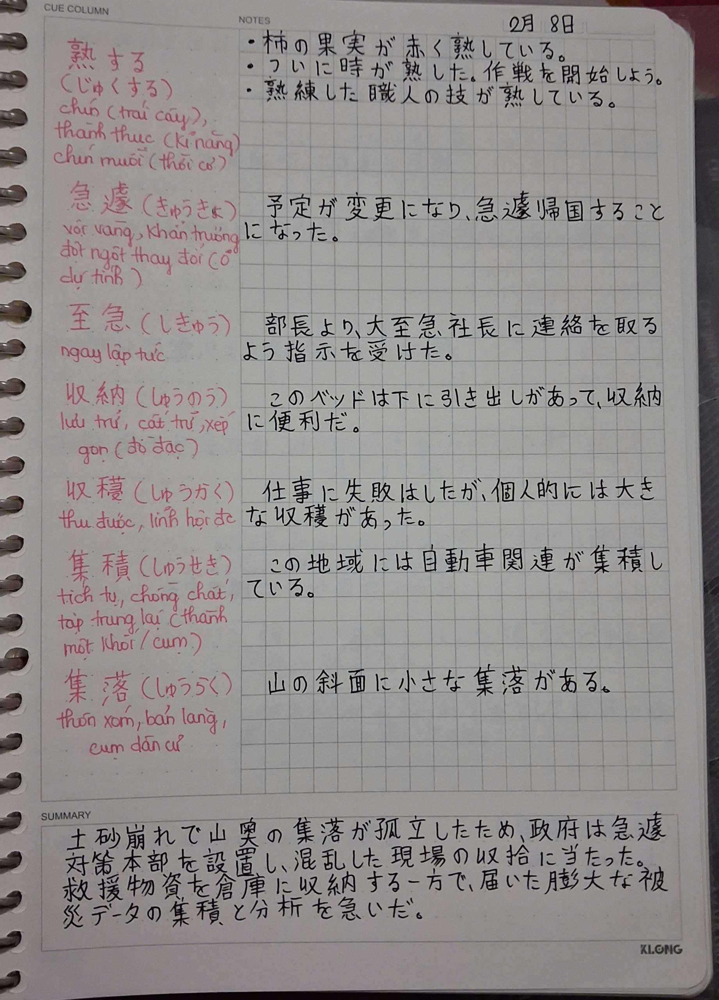

Chào mọi người, mình là Kiều My đây! Là một sinh viên ngành Nhật Bản học, yêu cầu đầu ra của mình là có được chứng chỉ JLPT N2 (hệ chuẩn), cho nên đây là mục tiêu trọng điểm trong quá trình học tập tại đại học của mình. Khởi điểm, mình chưa hề học trước tiếng Nhật cho nên mình phải học tập khá năng suất và khá căng thẳng. Mình chọn lấy N2 vào đầu năm 3 để giảm bớt áp lực của deadline "tốt nghiệp đúng hạn". Tuy nhiên, mục tiêu có được JLPT N2 vào đầu năm 3 là một mục tiêu khả thi, vì trong tiến trình học tập tại trường bọn mình tại thời điểm này cũng đã chạm trán với giáo trình level Trung cấp (~N2).Tuy nhiên, có một số bạn cùng xuất phát với mình sẽ thấy chưa đủ tự tin vì vốn tiếng Nhật là một loại ngôn ngữ dạng khó, và sau đây mình sẽ liệt kê một số rào cản, và cách khắc phục chúng nhé.

Trong cách ôn tập của mình, Hán tự là một yếu tố then chốt, vì đây là bước đệm cho các kĩ năng tiếp theo. Có Hán tự, chúng ta mới hiểu dược những mấu chốt của bài đọc hiểu, đặc biệt là những bài đọc hiểu có đáp án là một cách nói thay thế, họ sẽ dùng một chữ Hán mang ý nghĩa tương tự với chữ Hán ở bài đọc.Trong ảnh, mình sử dụng vở Klong với phong cách ghi chú Cornell.Mình sẽ dành phần trống bên trái để ghi từ vựng chữ Hán mình vừa gặp lần đầu, chung quanh nó là cách đọc và nghĩa tiếng Việt. Trong phần được ghi mực đen là ví dụ cách dùng của chúng trong một câu. Việc ghi chép này giúp mình nhớ được mặt chữ Hán, nghĩa và cách sử dụng chữ Hán (rất hợp với dạng câu hỏi mondai 6 phần từ vựng).
Mỗi ngày dành ra 15-30 phút đọc báo vừa giúp tăng vốn từ vựng thời sự, vừa rèn luyện tốc độ đọc lướt lấy ý chính...NHK là một trang tin tức Nhật chính thống và rất quen thuộc đối với những ai học tiếng Nhật. Những từ vựng được sử dụng trong trang Web không quá khó, và thông qua việc đọc báo, chúng ta sẽ học được cách người Nhật dùng tiếng Nhật trong thực tế.